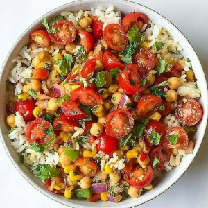

Ingredients
- 3-4 tablespoons extra virgin olive oil
⠀
- 2 cups of any rice of your choice
- 4 cups of water or vegetable broth
- 1 small onion, finely chopped
⠀
- 2 shallots, finely chopped
⠀
- 4 cloves of garlic, finely minced
- sea salt to taste
- 2 cups of halved cherry tomatoes
- one can of small organic chickpeas OR black beans
⠀
- a handful of chopped organic cilantro
⠀
- 1 cup of finely chopped red or green bell peppers
⠀
- 2 cups of roasted corn (or organic corn) I season mine with paprika, chili powder, cumin, a pinch of
Tabasco and garlic powder. About 1/4 tsp each!
Instructions
- In a large saucepan with a lid, heat the extra virgin olive oil & add the shallots and onions.
- Stir until softened/translucent then add the garlic.
- Finally, stir in the rice until well coated/ mixed with the oil and onions.
- Add the broth and stir, once it boils: reduce heat to a simmer and cover the saucepan with a lid.
- Simmer for ~ 20 mins. Turn off the heat and leave covered for at least another 10 mins so it can
fluff up.
- In a separate bowl: mix in all the vegetables.
- Before serving, top over the rice and mix in.
- Other option: add the vegetables to the rice before you add the broth and have them cook with the
rice if you prefer everything warm/sauteed.
Source Here